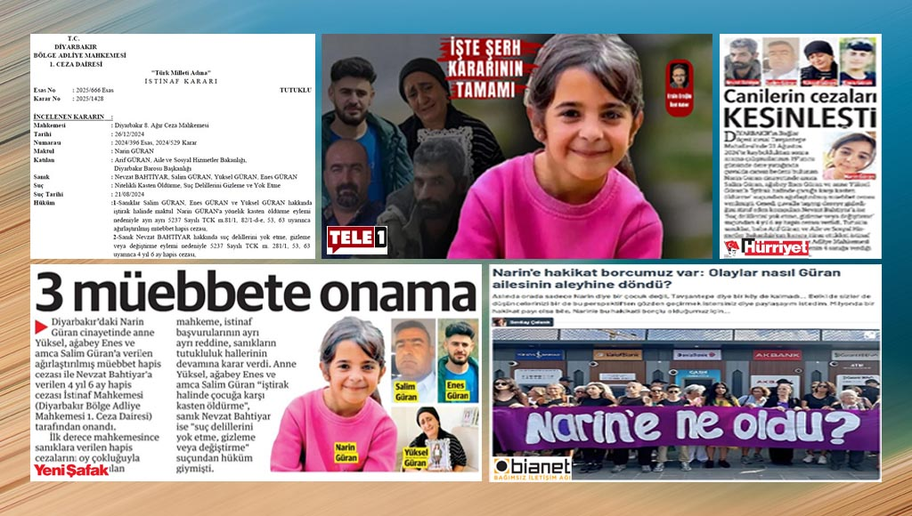

Güran ailesi ya gerçekten suçsuzsa?
Çok değil, daha beş ay öncesine kadar, gazetelerin, haber siteleri ve televizyonların en çok üzerinde durdukları konulardan biriydi Narin Güran cinayeti. Sadece gazeteciler değil, gündüz kuşağı programlarında konuşanlar bile dedektif kesilmişti.

Diyarbakır’ın Tavşantepe köyü bir TV stüdyosuna dönmüş; kimi gazeteciler somut bulguları haberleştirmek yerine söylentileri ve yargılarını aktararak reyting yarışına girmişlerdi. Yargı sürecini zehirleyen, etki altına alan medyadaki ağırlıklı görüş, anne Yüksel, ağabey Enes ve amca Salim Güran’ın bu cinayeti işledikleri yönündeydi.
Nitekim mahkeme de medyanın oluşturduğu kamuoyunun beklentisi yönünde karar verdi; aile fertleri Yüksel, Enes ve Salim Güran’ı cinayet suçundan ağırlaştırılmış müebbet, Nevzat Bahtiyar’ı ise “Suç delillerini yok etme, gizleme veya değiştirme” suçundan 4 yıl 6 ay hapis cezasına çarptırdı.
Ne yazık ki, Diyarbakır 8. Ağır Ceza Mahkemesi’nin bu kararı medyada yeterince sorgulanmadığı gibi, gazeteciler görevlerini tamamlamanın rahatlığıyla kenara çekildiler. Geçen hafta çıkan istinafın onama kararına da pek ilgi göstermeyip küçük haberlerle geçiştirdiler.
Oysa Bölge Adliye Mahkemesi 1. Ceza Dairesi, kararı oy çokluğuyla almıştı ve heyetin başkanı ayrıntılı bir karşı oy yazısı eklemişti. AA, AHaber, Akşam, Cumhuriyet, Halktv, Ekoltv, Hürriyet, CNNTürk, İHA, Sabah, Sözcü, Nefes, Türkiye ve Yeni Şafak’ın da aralarında olduğu çoğu medya kuruluşunda satır arasında yer aldı bu bilgi.
Gazetelerden sadece Milliyet, mahkeme başkanının karşı oy yazısını ayrı bir kutu olarak verdi. DHA[1] ve Serbestiyet’in ayrıntılı olarak aktardığı karşı oyun tam metnini de bir tek Tele1[2]’in haber sitesi yayımladı gördüğüm kadarıyla.
Başkan’ın karar metninden daha uzun olan karşı oy yazısını, dosyadaki tüm kanıtları, ifadeleri, raporları ciddiyetle inceledikten sonra kaleme aldığı anlaşılıyor. Karşı oyda ilk dikkatimi çeken, “Sosyal medya ve TV bültenlerinde yapılan haber ve tartışma içerikleri sonrasında değişen yeni duruma göre” sanıkların ifadelerinde değişiklikler olduğunu vurgulamasıydı. Medyanın yargılamadaki etkisini ifadelerde açıkça gözlemlemişti Başkan.
Soruşturma ve yargılamadaki hukuki eksikleri, raporlar arasındaki çelişkileri, daraltılmış baz raporlarının tali kanıt niteliğini, cinayetin nedenini ve işlenme biçiminin saptanamamış olmasını, mahkûmiyet kararının eksiklerini ve yanlışlarını tek tek sıralıyor Başkan.
Tele1’de Ersin Eroğlu imzasıyla yayımlanan karşı oy yazısını[2] inceledikten sonra Narin Güran’ın kaybolmasıyla başlayan süreçte duyduğum endişeyi anımsadım. Ya Güran ailesinin tüm fertleri ya da bazıları suçsuzsa? Ya biz gazeteciler, yargıyı da olumsuz yönde etkileyip masum insanların mahkûm olmasına yol açtıysak? Bu sorular vicdanımı sızlattı…
Aslında mahkemenin kararı konusunda daha önce DEM Milletvekili ve iletişim akademisyeni Sevilay Çelenk’in, Bianet’te yayımlanan “Narin’e hakikat borcumuz var: Olaylar nasıl Güran ailesinin aleyhine döndü?” yazısını ve ardından T24’te Gökçer Tahincioğlu ile yaptığı söyleşiyi[3], Esra Arsan’ın “Deprem haberciliğinden Narin Güran cinayetine, bir gazeteciliğin açık hali: Ferit Demir efsanesi (!)” yazısı[4] ile Ferit Demir’in eleştirilere yanıtını içeren söyleşisini[5] okuduktan sonra da aynı endişeye kapılmıştım. Bu yazılarda da Güran ailesi fertlerinin suçsuz olabilecekleri ve medyanın yanlışlarına dair çarpıcı saptamalar yer alıyordu.
O yazılardaki sorulara şimdi istinaf sürecindeki karşı oy yazısında vurgulanan hukuki itirazlar eklenmiş oldu. Artık bu dosyayı yeniden açmak, gazeteci soğukkanlılığıyla irdelemek; kanıtların peşine düşmek zorunluluğu doğdu. Eğer bizim de katkımızla mahkûm olanlardan biri bile masumsa bu büyük sorumluluk, ağır bir vicdani yük…
Soyut varsayıma dayalı niyet okuması
Diyarbakır Bölge Adliye Mahkemesi 1. Ceza Dairesi Başkanı, karşı oy yazısına, “Masumiyet karinesi” ve “Şüpheden sanık yararlanır” ilkelerini vurgulayarak başlıyor. En önemlisi, mahkemenin mahkûmiyet kararı hakkında “deliller kapsamında kanaat belirtilmeyip, soyut varsayıma dayalı niyet okuması şeklinde varılan kanaat ve gerekçe hukuka aykırıdır” saptamasında bulunuyor. Sanıklar lehine ya da aleyhine olacağına bakmadan mahkeme kararında saptadığı bütün hukuki sorunları özenli bir dille bir bir sıralıyor; üstelik öbür iki yargıcın onayladı istinaf kararı, Başkan’ın itirazlarına yanıtları kapsamıyor.
Başkan’ın, mahkeme kararının “eksik incelemeye, suç vasfına, sübuta, oluş ve kabul ile hukuka aykırı olduğu tespiti yapılan gerekçeler” ile bozulması gerektiği görüşünü içeren 16 sayfalık karşı oy yazısı Yargıtay aşamasında dosyayı inceleyecek heyetin işini epey kolaylaştıracaktır. Altta karşı oy yazısından özetleyerek aktardığım bölümler, yargıcın medyanın etki alanı dışına çıkarak serinkanlı hukuki değerlendirme yapmaya çalıştığını ortaya koyuyor:
- Daraltılmış baz raporu ile kesin maddi delil niteliği taşıyan çiftlik kamera görüntüsü ve oluşa ilişkin Nevzat’ın savunmaları arasında çelişkiler bulunduğu gözetilmemiştir.
- Her iki raporda (Prof. Labudde ve Ulusal Kriminal) yeterince iyileştirme yapılamadığı ve Narin’e benzer karartı hususunda her iki rapor arasında çelişkiler olduğu görülmekle bu iki rapora istinaden karar verilmesinin mümkün olmadığı kanaatindeyim.
- Oluş ve somut delillerle çelişen, başka delillerle desteklenmeye muhtaç daraltılmış baz raporuna ve çelişkili savunmalarına itibar edilerek Nevzat hakkında öldürme eyleminin sabit olmadığı kabulüyle suç delillerini gizleme suçundan mahkûmiyetine karar verilmesi hukuka aykırıdır.
- Yüksel ve Enes’in haklarındaki mevcut delil durumu da nazara alındığında, atılı suça iştiraklerinin ne şekilde gerçekleştiğinin ve suç vasfının ne olması gerektiğinin değerlendirilmesi gerekmektedir.
- Olay öncesinde Narin’in öldürülmesi konusunda verilmiş bir suç kararı bulunduğu sabit değildir.
- Yüksel ve Salim’in ilişkisinin duyulmasından daha önemli (olan) Narin’in öldürülmesi için asıl maksadın ne olduğu hususunda deliller kapsamında kanaat belirtilmeyip, soyut varsayıma dayalı niyet okuması şeklinde varılan kanaat ve gerekçe hukuka aykırıdır.
- Nevzat’ın, Narin’in cansız bedenini Salim’den aldığına ilişkin beyanları nazara alındığında, Narin’e yönelik öldürme eylemini, bizzat Salim’in gerçekleştirdiği hususunun gerekçeli kararda tartışılmaması hukuka aykırıdır.
- Yüksel ve Enes’in eksik inceleme sonucu ve denetime olanak vermeyen, tali nitelikte delil olarak kabul edilebilecek olan daraltılmış baz raporuna kesin maddi delil niteliği verilmek suretiyle eylemleri sabit kabul edilerek hüküm kurulması hukuka aykırıdır.
- Nevzat’ın “Salim Güran bana ’Yüksel’le birlikte olduğumuzu kız gördüğü için bu kızı ben öldürdüm” isnadı dışında bu iddialara ilişkin somut hiçbir delil ortaya konulamamıştır.
- Somut maddi deliller kapsamında suç mahallinin Salim’in kullanımında olan aracın şoför koltuğu olup olmadığının, öldürme eyleminin bizzat Salim tarafından tek başına gerçekleştirilip gerçekleştirilmediğinin gözetilmeyerek karar verilmesi hukuka aykırıdır.
- Duruşmalarda tanığın beş duyusuyla edinmediği hususlara ilişkin bilgisine başvurulmaya çalışıldığı, mahkeme heyetince, müdafi ve vekillerce, çapraz sorgu usulüne uyulmaksızın, maddi gerçeğin ortaya çıkmasına katkısı olmayacak nitelikte yorum içeren sorular sorulmak suretiyle CMK’ya aykırı davranıldığı anlaşılmaktadır.
Beylikdüzü’ndeki istismar vakası
“Beylikdüzü’nde 2 yaşındaki çocuğa istismar iddiası” haberini anımsar mısınız bilemem; Narin Güran cinayeti ile ilgili yargı süreci ve son olarak da istinaf kararı bana o olayı anımsattı.
Bianet’te üç yıl kadar önce yayımlanan o haber, bir doktorun anlatımına, hastane raporuna ve Büyükçekmece Cumhuriyet Başsavcılığı’nın soruşturma açmış olmasına dayanıyordu. Fakat sonra Adli Tıp raporu, cinsel istismar iddiasını doğrulamadı; soruşturma kapandı.
Tartışmalar üzerine haberi incelerken, hastane raporunun yok sayılamayacağını, eldeki verilerle “iddianın haber değeri”nin doğduğunu belirtmiş ama aile ile konuşulmamış olmasını eksiklik olarak değerlendirmiştim. Haberin değil, iddianın yanlış çıktığını yazmıştım.
Daha sonra çok düşündüm bu değerlendirmemi. Ağır bir suçlamaya maruz kalan ailenin acısını yeterince gözetmemiş olduğum sonucuna vardım zamanla. İddia aydınlanana kadar aile fertleri cinsel istismar suçlamasına maruz kaldı, ölen çocuklarının acısını bile yaşayamadılar. Şimdi onların halini düşündükçe içim acıyor.
Aldığım ders şu; bir cinsel istismar iddiasının – hele ki çocuğa yönelikse – üzerine gitmek önemli ama tarafların tümünün görüşünü almak, özenli dil kullanmak, ailenin acısına saygı duymak da önemli.
Narin Güran cinayetinde de aile fertlerinden biri bile suçsuzsa ve biz gazeteciler olarak o masumun mahkûm olmasına neden olduysak bu affedilmez bir gazetecilik suçu olur. Karanlıkta kalan soruların yanıtlarını bulmak, davadaki hukuki sorunların çözülmesini ve cinayetin tüm yönleriyle aydınlanmasını sağlamak gibi bir görevle karşı karşıyayız.
Dış Bağlantılar (5)